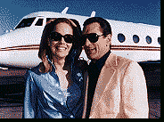

Contents | Features | Reviews | News | Archives | Store |
 |
|
| Movie Credits | Buy It! |
Casino
Review by Carrie Gorringe
|  | Directed by Martin Scorsese Starring Robert De Niro, |
It is 1973, and Abe 'Ace' Rothstein (De Niro) has been sent by the Kansas City crime syndicate to oversee the opening and management of the Tangiers casino. His primary function is to ensure that the mob fathers are able to skim the cream off the top of the casino earnings for their personal enrichment, but his most important goal is to run an efficient operation which will not attract too much official attention - or, at least, the type of personal attention which cannot be rectified by unofficial and generous 'donations.'
However, Rothstein's smooth course is eventually set adrift by two forces: one within his control, the other beyond it, but each on its own capable of bringing him down. He falls in love with a beautiful and shrewd hustler named Ginger McKenna (Stone), whom he marries despite her warnings that she is not the domestic type ("You've got the wrong girl," she tells him knowingly when he proposes to her; she turns out to be the master of understatement). Ginger's life is complicated by her love for Lester Diamond (Woods), a slimy pimp and drug dealer whose relationship to her is not unlike that of host and parasite.
The other force arrives in the form of his childhood friend, Nicky Santoro (Pesci), a mob enforcer who is truly a reptilian scumbag of the highest (or lowest) order - Santoro's talent in combining human heads and vices is a most unique one, to be sure; it is, to borrow a line from a most appropriate scene of Scorsese's Taxi Driver, "something you should see", or maybe not, depending on your level of intestinal tolerance for that sort of thing.
Sent from Kansas City to keep order in the Tangiers, Santoro soon gets out of control, indulging in a myriad high-profile illegal activities and violence. Indifferent to consequences, Santoro draws attention to himself and to the mob's interest in the casino. Unfortunately, Ace can't make a request for Nicky's recall to Kansas City because Nicky, unlike Ace, is a 'made' man in the organization (non-Italians cannot be made official members of the mafia) and Nicky can, therefore, operate with or without Ace's blessing. Eventually, due in no small part to Santoro's notoriety, the entire house of cards collapses around them, but not before a lot of coke and blood get spilled.
Fascinating though this synopsis sounds, the reality of Casino is, sadly, much different. But, judging from the first ninety minutes of screen time, this grim outcome did not have to be the case. The first half of Casino is completely compelling on both the narrative and visual levels. Scorsese and screenwriter Nicholas Pileggi decide to slant the narrative odds in favor of a historical and sociological perspective, and their gamble pays off big-time. Rothstein's voice-overs enumerate, with a meticulous precision that never becomes monotonous, every aspect of what it must have been like to run a Las Vegas casino as a front for the mob during the '70s.
Moreover, Scorsese demonstrates once again in Casino that there is no director working today who has his talent for visual composition and construction: the structure of the film consists of immaculately-constructed montage sequences that flow into long takes that are almost lyrical in their movement, and back again - the hallmarks of his work with the incomparable Oscar-winning editor, Thelma Schoonmaker Powell.
There are also some obvious influences from the legendary Saul Bass, who, together with Elaine Bass, has been designing titles for Scorsese's films since Goodfellas; in one sequence, a pair of dice hit the craps table with an effect that is literally eye-popping. In short, the first section of Casino has the characteristics of some of the best crime films of the 1940s and 1950s: a narrative pared down to its most essential elements but never lacking in explicatory and visual detail.
Unfortunately, following this promising beginning, the viewer is left with seventy minutes of cinema which regresses in strength as it progresses in length, only to become terminal long before the final credits roll. After some careful consideration as to the source of the problem, it is apparent that the weakness in Casino stems from the fact that the film tries to change narrative course in mid-stream; when historical/sociological explanation is abandoned in favor of a standard crime narrative, the flaws in this approach become apparent.
In Casino, the first half of the film tends to emphasize processes over individual psychological development, as historical/sociological narratives must, but Casino pays a price for that in characterization that is shallow. While greed alone can drive the narrative forward effectively enough, difficulties develop when the film begins to emphasize the characters' personal lives and the psychological qualities that lead to their downfall. Since the first half of the film is preoccupied with creating atmosphere, there exists scant information about what motivates these characters. By the end of the film, two emotions are paramount: relief that the end has arrived, and a sick feeling in the pit of one's stomach at the waste of such storytelling talent; one can't help but think that the real joke might be on Scorsese.
In all fairness, part of the problem with Casino might be attributable to a vigorous, last-minute use of scissors; the original cut had a four-hour running time, so much of the detail necessary to understanding character development was probably excised in reducing the film to just under three hours (but there have been rumors of a script which was not complete before principal photography began). Nevertheless, warning signs of the problems to come were apparent in the first half of the film: the audience is never really led to a clear understanding of why Ace makes a fatal decision to jeopardize his position in Vegas or why he becomes increasingly doctrinaire in his management style and personal life.
Therefore, when Ace makes his mistake, the audience has to assume, with no real forewarning or explanation, that Ace has suddenly become unreasonable over a relatively minor incident; the reaction seems out of all proportion to the 'crime'. Since it is this incident which leads to his downfall, not to mention the fulcrum on which the course of the narrative rested, some preparation would have been helpful. As it is, the bottom drops out, and Casino's narrative enters a free fall as the characterization decays, with implausibility being heaped upon implausibility, and the narrative becomes an object of ridicule rather than one of fascination. Resorting to a Sunset Boulevard type of narrative structure- flashback narration by a person who may already have been killed - does not help the situation any, even by adding a twist to it; by the time the twist arrives, its presence is annoying rather than intriguing.
Whereas in Goodfellas the narrative structure continually reinforced the characters' personalities, and therefore made the violence comprehensible in a perverse sort of way, Casino drains out the context, leaving only the violence behind, and, on its own, it's merely repugnant (indeed, one gets the uncomfortable feeling that Scorsese is feeling the pressure from the success of the new crop of blood-splattered auteurs like Tarantino, who seem to be encroaching on his cinematic territory, and that he is trying to up the ante).
It doesn't help matters any that De Niro and Pesci seem to be operating on automatic pilot, almost as if their familiarity with their respective roles has hardened into an almost visible contempt. Only Stone gives it a valiant try from the beginning; when the film's gears are in sync, she provides a sparkling portrait of a woman who can operate in a man's world with ease. The audience has seen this type of self-confident portrayal from Stone before (notably in Basic Instinct), but it has been given a more breezy and less nasty overlay than might be expected.
But then the seemingly impossible takes place as the film falters: one sees the specter of an actress, never one to have received critical respect on any larger level, infusing her character with a combination of such incandescence and grim determination that she becomes the only reason for watching the film's second half; the sparkling rhinestone hardens into a diamond, one that, even in its soiled, reckless and ruthless state, can muster enough brilliance from its facets to focus all attention upon itself.
More remarkably, Stone is able to generate a fair amount of empathy for Ginger, a woman who is, at bottom, a most unlikable individual (the audience knows this because Scorsese and Pileggi make Ginger into a woman who solves her child care problems by tying her daughter to a bed - a contemptible act, but, then, she did try to warn everyone that she wasn't the domestic type, and maybe someone should have taken her at her word). Stone's Oscar nomination was well-deserved, if for no other reason than her adeptness at having to carry the last half of Casino on the back of her acting ability - and she very nearly succeeds. Given the premature demise of this film, and the scope of the task she must accomplish, her eventual failure isn't her fault.
Other problems exist in Casino, not least of which is a dependence upon period music that is overwhelming. By one count, Scorsese licensed the use of forty-eight songs for the soundtrack of Casino. While Scorsese is usually a master of creating a mood with popular music (I am always reminded of his 1968 feature debut, Who's That Knocking At My Door?, the final sequence of which utilizes a Catholic Church, a crucifix, Harvey Keitel and the title song to an effect that is at once hyperbolic and ironically poignant), there is simply too much of it here, and its use is really of questionable quality at times, almost as if - and the thought is horrifying in its implications - Scorsese has the impression that Casino needs the music in order to make the visuals work.
One use is particularly glaring, coming at the point when Ace sees Ginger for the first time and falls head over heels in love with her at first sight. The soundtrack is playing Love is Strange and when the audience sees the object of Ace's affections in reverse shot, the line "...you're the one" echoes his sentiments right on cue. It's the sort of amateurish 'Mickey Mousing' that one would not expect in a director of Scorsese's caliber, but then again, that's exactly how one might assess Casino as a whole.
Contents | Features | Reviews | News | Archives | Store
Copyright © 1999 by Nitrate Productions, Inc. All Rights Reserved.